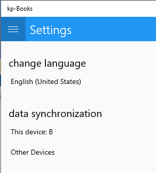
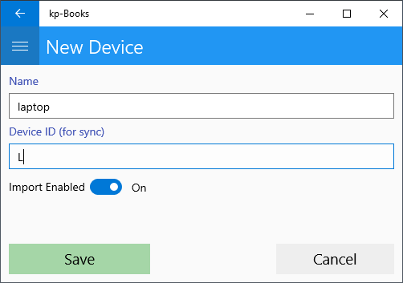

Αν πρόκειται να τρέχουμε την εφαρμογή σε πολλές συσκευές και θέλουμε να γίνεται συγχρονισμός των δεδομένων, τότε κάθε συσκευή πρέπει να προσδιορίζεται μοναδικά από ένα γράμμα. Θα μπορούσε πχ το κινητό να έχει το γράμμα 'Α' και ο επιτραπέζιος υπολογίστής το γράμμα 'Β'. Το αναγνωριστικό της συσκευής μπορεί να αλλάξει απο το μενού "Ρυθμίσεις" - "Συγχρονισμός δεδομένων" - "Αυτή η συσκευή"
Απο το μενού "Ρυθμίσεις" - "Αλλες συσκευές" μπορούμε να προσθέσουμε περιγραφή και αναγωριστικό για άλλες συσκευές με τις οποίες θέλουμε να έχουμε συγχρονισμό.
